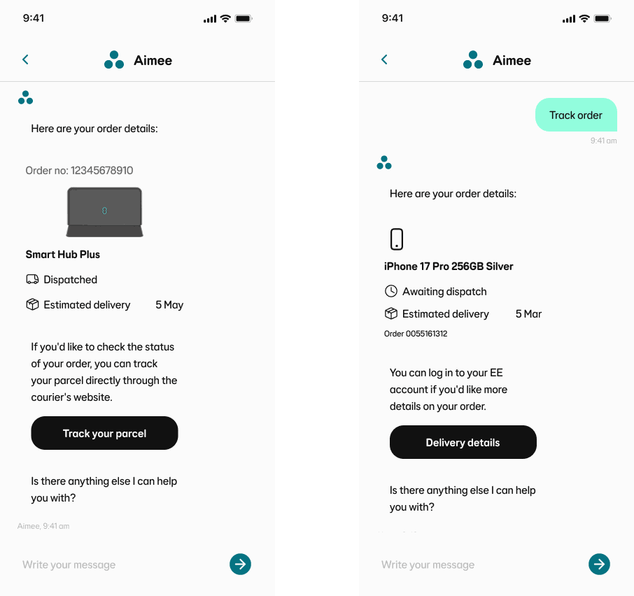
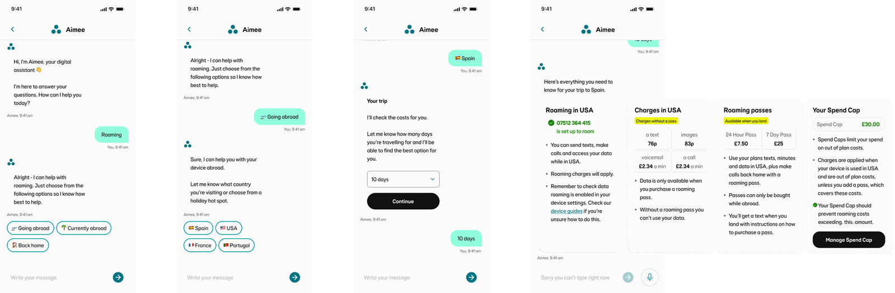
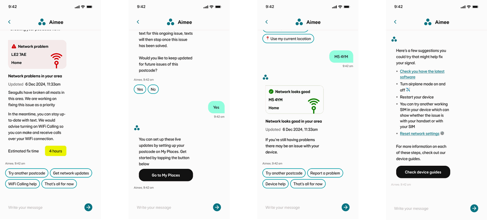
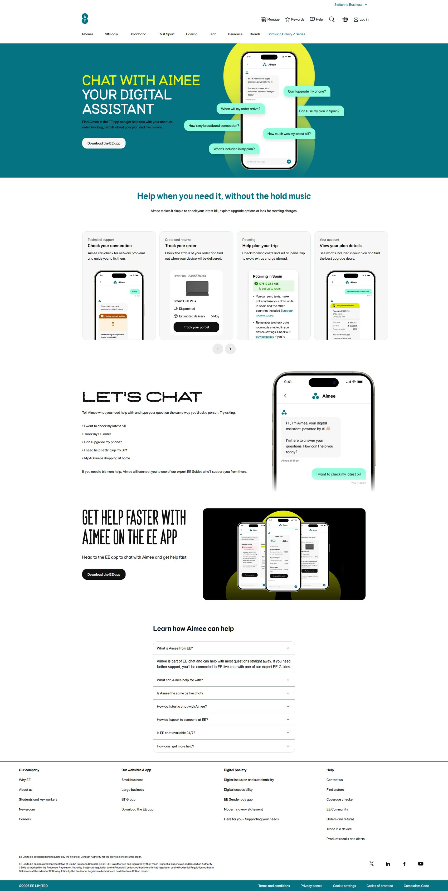
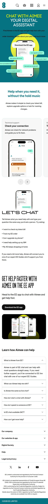

Aimee, EE's virtual assistant
Designing conversations inside Aimee, the AI assistant serving EE's 10+ million customers. Leading product work across billing, roaming, connection and early-life journeys, from the first question to a resolved answer.
How do you make an AI assistant feel genuinely useful in the moments that matter most?
Sorting out a bill. Understanding roaming before a trip. Getting set up as a new customer. These aren't small moments. They're often the reason someone is talking to EE in the first place. The challenge: answer them without the conversation feeling generic, the handoffs feeling clunky, or the customer feeling talked down to.
EE is the UK's largest mobile network, with more than 10 million customers passing through its support channels every year. Aimee is the AI assistant sitting at the front of that experience, the first place a customer lands when they need help.
I joined as Product Designer in August 2024, working across three of Aimee's highest-traffic areas: early-life for new customers finding their feet, billing (the number one reason anyone contacts a network), and roaming (which for most people is stressful, time-sensitive, and often happens while they're already abroad).
The longer-horizon vision work (where Aimee and the wider EE experience go next) sits in the Aimee Vision case study.
Three journeys, up close
Aimee covers a lot of ground. These are the pieces I've led end to end, where the design problem went beyond wording, and the interesting work was in deciding what to remove rather than what to add.
Track Order
Two journeys, one question
Customers asking where their order had got to could land in either of two overlapping Track Order journeys, and get a different answer depending on which one they hit. The confusion wasn't new, and it showed up in both places you'd look for it: the usage data, and the conversation transcripts.
Reading those side by side made the pattern hard to miss. Customers weren't failing to understand either journey. They were bouncing between them, repeating themselves, and escalating to an advisor for something the assistant should have been able to answer outright.
The strategy came out of the groundwork
None of what shaped this project lived in one place. The API documentation sat with engineering. The data on where customers were dropping out sat with analytics. The clearest picture of what people were actually struggling with was buried in conversation transcripts. Different teams, different formats, none of it joined up, and no single person holding the whole picture.
So discovery wasn't a box to tick before the real work started. It was the real work. Pulling everything onto one board (the API sources, the drop-off data, the transcript themes, the existing journeys mapped end to end) is what made the overlaps impossible to ignore, along with all the places we were asking customers for things we could already answer ourselves.
It's also what made the case for streamlining. Once every step of both journeys is laid out side by side, the ones that don't earn their place are very hard to defend, and adapting them into something a customer can actually follow becomes an obvious next move rather than a risky one.
Stop improving both. Build one.
The insight pointed somewhere slightly uncomfortable: the problem wasn't what either journey said. It was that there were two of them. Improving both would have made two good journeys that still contradicted each other.
So the brief changed. Rather than optimising in place, we consolidated into a single journey designed around what customers actually needed to understand and complete, and everything that didn't serve that got cut.

Retire, rather than patch
Made the call to retire the Delivery Query and Order Confirmation journeys outright rather than maintain them alongside the new one. It was the less comfortable option (retiring live journeys always is), but keeping them would have preserved the exact ambiguity we were trying to remove. Fewer routes in meant fewer ways to end up somewhere unhelpful.
Push past the design brief
A journey is only as good as the data behind it, and the right answer depended on calling the right things. I took the scope beyond design to help identify which APIs we should actually be using, which meant the experience and the data model were solved together rather than one waiting on the other.
One card, used consistently
Designed a new card component to carry the key order information in the same shape every time. Translating data sources, API responses, known pain points and conversation reviews into something a customer could read at a glance, and recognise instantly the next time they came back.
Launched on broadband
The Broadband Track Order journey went live and held a quarter of the customers who entered it, resolving the question without an escalation. Misrouting dropped, and so did the unnecessary handoffs that came with it.
Getting there meant working well outside my own team: calls and conversations with designers and engineers across other parts of the business to pull together information that wasn't written down anywhere. Doing that early is what took time out of the launch.
That groundwork has since moved the Mobile Track Order journey forward too, API clearance secured and design signed off, ready to build on the same foundations.
Roaming
The one I've learned most from
Roaming sits at an awkward intersection. Customers often only think about it at the worst possible moment, standing in an airport, or worse, already on holiday realising their data isn't working. The information they need is specific (which country, which plan, which add-on), time-pressured, and often has cost implications they want to understand before they commit.
The existing journey made that harder than it needed to be. It was fragmented: the pieces were there, but spread across a conversation in a way that left customers unable to see what their options actually were, let alone act on them without asking someone for help.
So the design problem wasn't "explain roaming." It was: get a customer from "I need help with roaming" to a confident answer in as few turns as possible, without the conversation feeling like an interrogation.
Picking up a journey already in motion
I came onto this one partway through. It had a lot of moving parts already in play: roaming logic with real edge cases, several APIs feeding it, and the constraints of building inside Sprinklr. Getting properly fluent in all three was faster than trying to design around them, so that's where the first stretch went.
The temptation when you join something mid-flight is to tidy at the edges and not disturb anything. The feedback and the data didn't support that. The journey wasn't unclear in a few places; it was fragmented throughout, and no amount of rewording was going to fix a structural problem.

Restructure rather than tweak
The safe move when you inherit a live journey is incremental improvement: it's cheaper, it's a shorter conversation, and nobody has to defend it. The evidence pointed the other way. Incremental fixes to a fragmented journey produce a slightly tidier fragmented journey, so I argued for structural change instead and took on the extra cost that came with it.
A carousel, so options can be compared
Introduced a new carousel component to put roaming options side by side. Roaming decisions are inherently comparative (which pass, how many days, what it costs against what you'd pay without one), and comparison is close to impossible when information arrives one message at a time and scrolls away behind the next one.
An end-summary that closes the loop
Rebuilt the end of the journey around a clearer summary, so a customer finishes holding one view of what applies to them rather than a scrollback of messages to reassemble. Conversations that simply stop leave people unsure whether anything actually happened, and that uncertainty is its own escalation.
Testing the bigger bet
Arguing for restructure rather than tweaks needed evidence, not conviction. I built a prototype and ran testing sessions with the team in the room, partly to check the simplified flow genuinely was easier to navigate, and partly so the people who'd have to build it were part of the decision rather than receiving it afterwards.
It tested well on both navigation and clarity, which moved the structural argument out of the realm of design opinion and into something I could show people.
The highest containment of the three
An 8% uplift took containment to 55%, more than half of everyone entering the journey now gets a confident answer without a Guide picking it up. For a journey people reach at their most time-pressured, that's the number that matters most.
Roaming requirements and technical constraints came into the design as it developed rather than arriving after it, which is the only reason a restructure of this size was deliverable on the timeline. Close, continuous work with engineering, plus prototypes everyone could put their hands on, kept the team moving together instead of reviewing each other's finished work.
Connection Issues
Is it the network, or is it me?
Almost every connection problem arrives as the same question with two completely different answers behind it. Either something is wrong with the network in the customer's area, in which case there's nothing they can do but understand when it'll be fixed and how to stay reachable meanwhile, or it's their device, in which case there's plenty they can do and none of it involves waiting.
Getting that fork right is the whole journey. Send someone into device troubleshooting when there's a mast down and you've wasted their time and lost the containment anyway. Tell someone the network is fine without handing them a next step and they'll escalate regardless.
The complication is that answering it needs a postcode, and people don't always know theirs, or aren't standing at the address they're asking about.

Three journeys, for three levels of certainty
The blocker here wasn't design, it was access. Whether this journey could work at all depended on which APIs we'd be cleared to call, and that answer wasn't arriving any time soon.
Waiting would have cost months. So instead of designing one journey and hoping, I picked up the initial exploration already in progress and designed three: one for each realistic outcome of the API conversation.
The version worth arguing for
Designed the ambitious case first, with a full set of API calls behind it: saving a MyPlace for customers who didn't have one, using live location when someone didn't know their postcode, and richer detail inside the Connection Issues component about what was actually happening on the network near them. It got stripped back on time and cost. But the thinking is done and the case is already built, so revisiting it later is a much shorter conversation. Exploration isn't wasted just because it doesn't ship first time.
The version that could launch regardless
Also designed a journey with no API dependency at all, enough to launch as an MVP and start moving containment even in the worst case. That turned out to matter more than expected. It's now built and running as the fallback whenever the API fails, so the worst-case design ended up becoming the resilience layer rather than a contingency we never used.
The version that shipped
Once approval came through for the most important API, I designed the journey around it. The containment comes from a card component that gives the customer a real answer inside the conversation, covering every possible state of the network in their area, rather than sending them somewhere else to find out. It cleared accessibility review first time.
Four in ten, resolved in conversation
The journey now contains over 41% of the customers who enter it, answered outright, without an advisor. And because the no-API version was designed alongside it, it degrades gracefully instead of falling over when the data doesn't come back.
The journey was built in a pair, on top of an existing exploration, and the card cleared accessibility review with input from our accessibility lead.
I'm optimising it now: extending into broadband connection issues, which should push containment further still; adding deeplinks where they'd save the customer a step; and going back through the Connection Issues card to see what else it could be doing.
Aimee Learn page
How do you explain an assistant to someone who hasn't used it?
Everything else in this case study happens once a customer is already in a conversation. This one is the opposite problem: Aimee is effectively invisible until you're talking to it, which makes it hard to know what it can actually do for you, or whether it's worth starting.
So the brief was a web page rather than a journey. Somewhere to shed a bit of light on Aimee, show what's possible, and give customers landing from search a reason to try it. The tension is that a page explaining capability wants to list everything, and a page that lists everything is one nobody finishes reading.


A design system built for conversation
Loop, our design system, is built for the assistant: components that assume a message thread, a turn structure, a narrow column. Web pages don't work like that, and a fair amount of Loop doesn't translate cleanly onto one.
That meant learning a new set of constraints from scratch: how EE web pages are actually built, which web patterns customers already expect, and where the design system could stretch to cover a surface it was never designed for versus where it needed something new. Genuinely unfamiliar ground, and probably the most I've learned on a single piece here.
Treat a low bar as an opportunity
Competitor analysis turned up something useful: equivalent pages across the market were basic, and none of them showed much design ambition. That's an easy finding to file away as reassurance, everyone else is doing the minimum, so the minimum is fine. I took it the other way. If the whole category has set a low bar, clearing it properly is cheap differentiation, and there's no reason EE's version shouldn't be the good one.
Hierarchy over completeness
The hardest discipline on a capability page is leaving things out. I built the page around a clear content hierarchy so it stays focused and readable rather than becoming an exhaustive feature list nobody scrolls to the end of. Taking it through design crits regularly was what sharpened this most, several rounds of feedback from the wider team pushed the structure, visuals and flow well past where I'd have got on my own.
Hold the line after handoff
When the build came back it didn't meet the visual standard the design set. The path of least resistance is to accept it and move on. Instead I raised it, walked through the specific gaps rather than describing it vaguely as "off," and made the case for fixing them. That produced multiple rounds of quality updates, and opened up ongoing work on more complex changes the developers had considered finished. Design quality isn't decided at handoff; it's decided by what you're willing to go back and argue for.
The page is live and still moving, the version in the frames above has already been overtaken by content and SEO work since, which is rather the point. It's a page that keeps earning its place rather than one that shipped and stopped.
Next is making it something you can interact with rather than only read: a test chat window so people can try Aimee directly on the page, and video to show the assistant working rather than describing it.